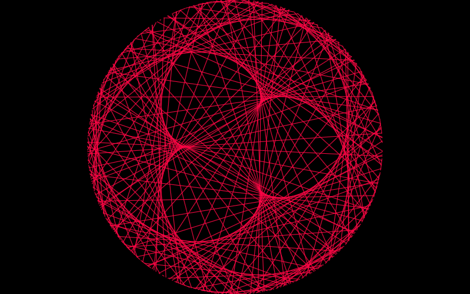
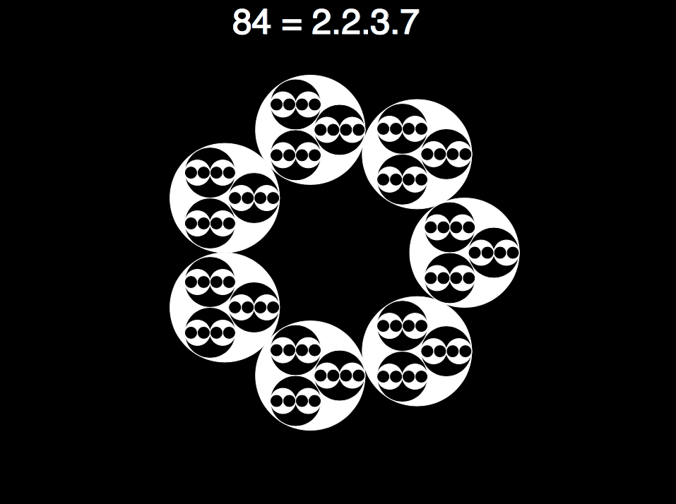
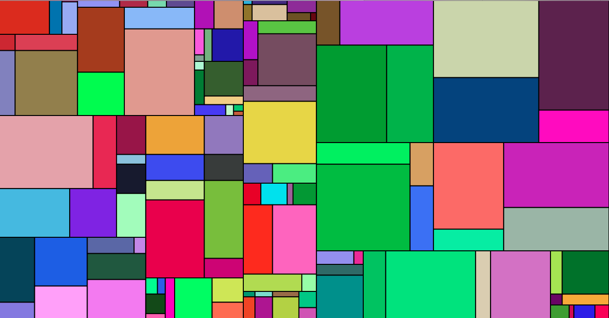
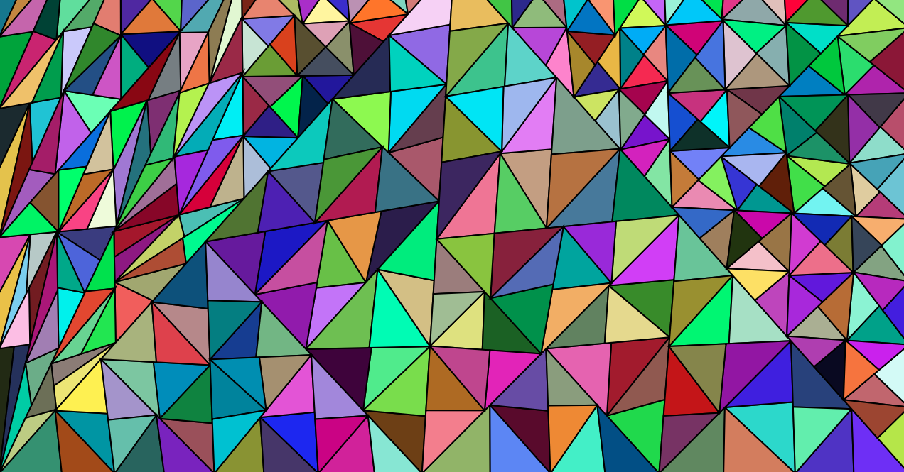
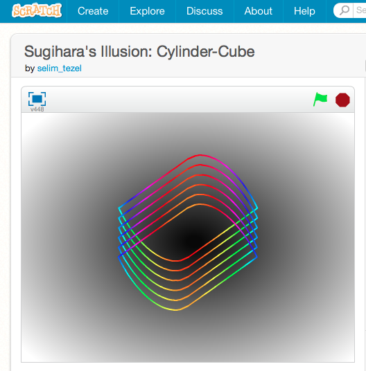
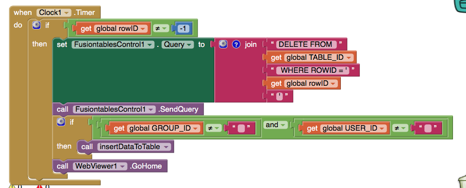

Selim Tezel DGMD-S15 Final Project
Processing with p5.js
Dance of the Number Cycles

Prime Factorization Patterns

Post-Modern Mondrian 1: Rectangles

Post-Modern Mondrian 2: Triangles

MIT Scratch
Sugihara's Illusion: Ambiguous Cylinder

MIT App Inventor
Friend Locator App

Snap! & Beauty and Joy of Computing
Simple Studio for Character Design and Animation